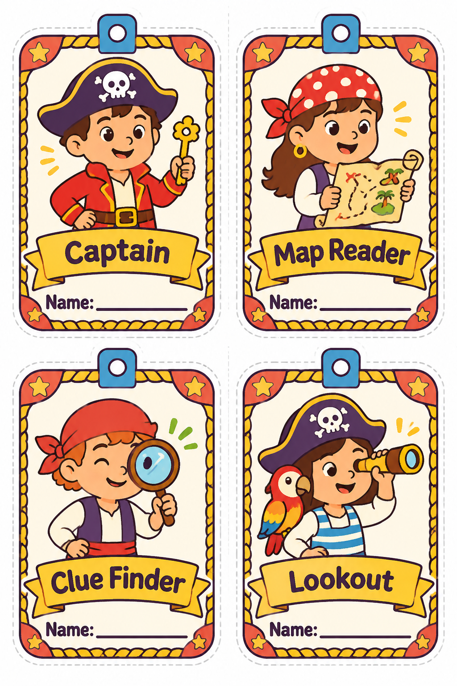

Treasure huntRole badges (lanyard)color
All words exact
4 lanyard tags, role title on a ribbon, Name line on every badge. Characters match the roles (key, map, magnifier, spyglass + parrot). Skull and crossbones on hats.
Captain1/1Map Reader1/1Clue Finder1/1Lookout1/1Name:4/4
OCR lines: pa / Captain / Name: / Clue Finder / Name: / Map Reader / Name: / Lookout / Name:
gpt-image-2.6-flare · 1024x1536 · quality low · 8.5 s · $0.0226
Prompt
A printable US Letter portrait page (8.5 by 11 inches) for a kids' pretend-play game, drawn flat and straight-on and filling the whole image: the page itself, not a photo or mockup of paper. Plain white paper with a clean white margin of about half an inch on every side where nothing is drawn, so it prints on a home printer. The game is "Pirate Treasure Hunt". Art style for the whole kit: bright, friendly flat vector cartoon like a modern kids' picture-book app: bold clean dark purple outlines, flat cheerful fills in coral red, sunny yellow, lime green, sky blue, deep purple and cream, soft rounded shapes, no gradients, no shading texture, no photo effects, lots of white paper. Ink-friendly: color sits on white, no full-page dark background. Draw a sheet of exactly 4 lanyard name badges, laid out 2 columns and 2 rows, all the same size: tall rounded-rectangle tags with a punched hole and a little clip at the top center, a themed decorative border, one character picture in the upper half, the role title under it on a ribbon banner, and at the bottom the word "Name:" followed by a long blank line to write on. In order: badge 1: a cute cartoon character as the captain (pirate hat and a treasure chest key), title "Captain"; badge 2: a cute cartoon character as the map reader (holding a rolled map), title "Map Reader"; badge 3: a cute cartoon character as the clue finder (holding a magnifying glass), title "Clue Finder"; badge 4: a cute cartoon character as the lookout (holding a spyglass, parrot on shoulder), title "Lookout". The ONLY words on the page, spelled exactly letter for letter: "Captain", "Map Reader", "Clue Finder", "Lookout", "Name:". "Name:" appears once on every badge (4 times). Big, clear, rounded print letters, easy for a 5-year-old to read, dark on a light background, never curved along a path, never tiny. No other words, letters, numbers or signatures anywhere. Every badge identical in shape and size so they look like a set. Thin gray dashed cut lines around each piece, with wide white gutters between pieces so scissors fit. Kid-friendly and gentle, for ages 4 to 8: no guns, no knives, no real weapons (a toy sword is fine), no blood, nothing scary, no real people, no brands, no logos.